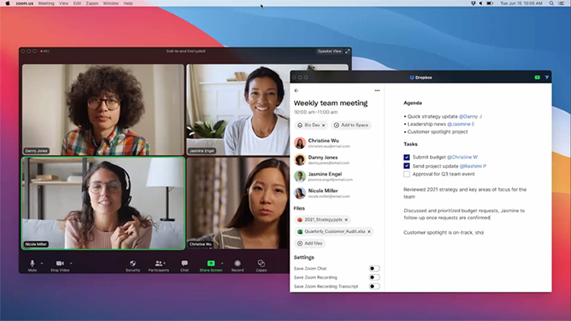

Zoomtopia 2020: Zoom looks to super-charge videoconferencing

10.12.20
CATEGORY (PRESS)
DATE PUBLISHED (10.12.20)
PRESS WORK
Zoomtopia 2020: Zoom looks to super-charge videoconferencing
(10.12.20)
At its fourth annual Zoomtopia event last week, videoconferencing platform Zoom unveiled a host of new features aimed at improving the in-meeting experience for its more than 300 million daily active participants.
With Europe bracing for a second wave and the U.S. still reporting hundreds of daily coronavirus deaths, the proliferation of virtual events and meetings remains a defining features of 2020. Not surprisingly, Zoom says it's adding 100,000 users per quarter and has seen a big jump in stock values this year.
Here’s a closer look at what Zoom announced at Zoomtopia 2020.
[ Related: Review: 5 top videoconferencing services put to the test ]
The arrival of Zapps
The company highlighted its introduction of Zapps — applications that can be used within Zoom to help improve productivity and create a more engaging experience.
According to Zoom, Zapps eliminate the need for users to switch between multiple applications on their desktop, allowing them to quickly streamline permissions, grant document accessibility, and collaborate on screen. The first Zapps will be distributed by the end of year and open to developers shortly thereafter. Both free and paid Zoom users will have access to them.
At its fourth annual Zoomtopia event last week, videoconferencing platform Zoom unveiled a host of new features aimed at improving the in-meeting experience for its more than 300 million daily active participants.
With Europe bracing for a second wave and the U.S. still reporting hundreds of daily coronavirus deaths, the proliferation of virtual events and meetings remains a defining features of 2020. Not surprisingly, Zoom says it's adding 100,000 users per quarter and has seen a big jump in stock values this year.